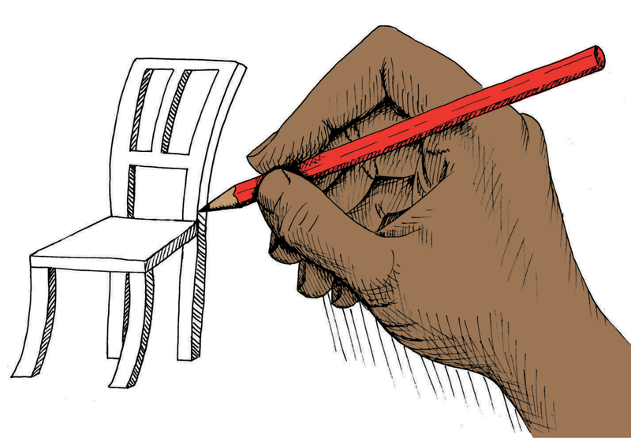
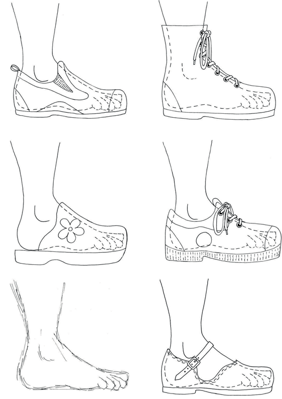

How to say things with drawings
Sketching and drawing are very important skills in Technology. They allow us to share our ideas, designs, and technical solutions with other people. In this chapter, you will learn what the main purpose of graphics are. You will also learn about the different meanings of thick and dark lines, thin and feint lines, and dashed lines. And you will learn a little bit about scale and how to show sizes on drawings. But the most important thing about sketching and drawing is that you need to practise. So in this chapter you will learn how to do some simple sketches and how to do a flat drawing showing sizes.

